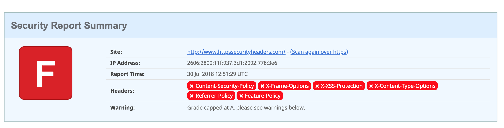

In the last week or so (July 2018) Chrome 68 has been released which introduces the Not Secure warning to the address bar of websites not using HTTPS. This is another step towards serving all websites over encrypted HTTPS. Troy Hunt and Scott Helme have both talked extensively about why we should be securing web traffic and using HTTPS even for simple static websites. Fortunately, many websites are getting the idea and are now securing their content with TLS certificates, however it is important to know that having HTTPS on your website doesn't mean it is immune from attack and more can be done to improve your website security. I recently watched a talk Scott Helme did back in 2016 at OSWAP London, where he outlined the advantages of including additional HTTP security headers to increase your website security and demonstrated how they help alleviate the chance of man-in-the-middle (MITM) and cross-site scripting.
TL;DR
I am going to configure additional security headers for this website which is hosted on Azure App Service with Azure CDN. We are going to use SecurityHeaders.com to assess and rate the headings on the website. Below are links to the sections.
- Clear up the warnings and suggestions
- Add X-Frame-Options header
- Add X-XSS-Protection header
- Add X-Content-Type-Options header
- Add Strict-Transport-Security header
- Add Content-Security-Policy header
- Add Referrer-Policy header
- Add Feature-Policy header
What am I going to do?
I am going to use this website to assist me and any others in learning about security headers. I will gradually add more security headers to the website and document how I did so. You can find out more about the importance of security headers on SecurityHeaders.com (about page) which was created by Scott Helme. SecurityHeaders.com also provides us with a rating system to how well a website's security headers are configured, I will be analysing this website after every additional header, hopefully we will get to A+.
It is important to note this website is fairly basic and is just a bunch of static
files (css and js are not even minified). The site is hosted on Azure
App Service and utilise Azure CDN with a custom domain. That means the
web server in use is IIS so we will be configuring the headers for an
IIS server via a
web.config file. The whole site including the
web.config file can be found on GitHub at
TheYorkshireDev/https-security-headers
Why a website and not a blog post?
I decided to create a website to document and demonstrate how to add additional security headers rather than a blog post so we had a practical example. In this website I have included several commonly used features websites have which are less trivial than some of the examples on the web. This site makes use of several different JavaScript/CSS CDNs, Google Analytics, Disqus commenting, external fonts and locally developed JavaScript/CSS. You can see the entire source-code on GitHub at TheYorkshireDev/https-security-headers
First analysis
As it stands, a brand new Azure App Service website is give a HTTPS endpoint but traffic to the website is not automatically redirected to HTTPS. Since that is the case I will start by analysing the website on SecurityHeaders.com using the HTTP endpoint. The results of which don't make good reading.
As mentioned above we are explicitly passing in the HTTP reference and checking follow redirects

The results returned are awful, an F. As you can see there are six security headers
in red indicating they are missing from the response. We will go through
them one-by-one and add the necessary configuration to
web.config to utilise them. You may have noticed too the grade we can achieve is
capped at A rather than A+, that is because we have some warnings and
suggestions (see below).
There is a single warning Site is using HTTP and two additional headers that it is good practice to remove Server and X-Powered-By. Once these are addressed we should not be capped at an A rating on SecurityHeaders.com
It is clear from the first analysis what needs to be done to improve the website's security and rating. We need to make the following tweaks:
- Clear up the warnings and suggestions
- Add X-Frame-Options header
- Add X-XSS-Protection header
- Add X-Content-Type-Options header
- Add Strict-Transport-Security header
- Add Content-Security-Policy header
- Add Referrer-Policy header
- Add Feature-Policy header
Warnings and Suggestions
The first analysis produced a warning that the HTTP endpoint of the website does
not redirect to HTTPS, it also outlined the good practice of removing/changing
the
Server and
X-Powered-By headers. In order to do this we first need to create
a
web.config file.
Change Server Version
To change the server response header and obfuscate the true server type,
in the
web.config file we need the following line:
<requestFiltering removeServerHeader="true" />Remove X-Powered-By Header
To remove the X-Powered-By response header, in the
web.config file we need the following line:
<remove name="X-Powered-By"/>Remove X-AspNet-Version Header
To remove the X-AspNet-Version response header which isn't highlighted on
the analysis because it is an ISS header only, in the
web.config file we need the following line:
<httpRuntime enableVersionHeader="false"/>Redirect HTTP to HTTPS
To redirect HTTP traffic to HTTPS automatically we need more than a single
line in the
web.config. We add a rewrite rule that will send all traffic to HTTPS with a
301 redirect.
<rule name="Redirect to https">
<match url="(.*)"/>
<conditions>
<add input="{HTTPS}" pattern="Off"/>
<add input="{REQUEST_METHOD}" pattern="^get$|^head$" />
</conditions>
<action type="Redirect" url="https://{HTTP_HOST}/{R:1}" redirectType="Permanent"/>
</rule>Review
The complete
web.config file for removing the warnings is below.
<?xml version="1.0" encoding="UTF-8"?>
<configuration>
<system.web>
<httpRuntime enableVersionHeader="false"/>
</system.web>
<system.webServer>
<security>
<requestFiltering removeServerHeader="true" />
</security>
<httpProtocol>
<customHeaders>
<remove name="X-Powered-By"/>
</customHeaders>
</httpProtocol>
<rewrite>
<rules>
<rule name="Redirect to https">
<match url="(.*)"/>
<conditions>
<add input="{HTTPS}" pattern="Off"/>
<add input="{REQUEST_METHOD}" pattern="^get$|^head$" />
</conditions>
<action type="Redirect" url="https://{HTTP_HOST}/{R:1}" redirectType="Permanent"/>
</rule>
</rules>
</rewrite>
</system.webServer>
</configuration>
Outcome
Now we have added the initial
web.config, I have re-analysed the website with the results below.
As you can see the rating itself has not improved and is still F, however you may notice we are no longer capped at an A grade because we have addressed the warnings. SecurityHeaders.com also detects the update and removal of the Server and X-Powered-By headers.
X-Frame-Options
The X-Frame-Options header, protects visitors to the site from clickjacking. This headers allows you to lockdown the use of your website through i-frames, thus limiting the ability for an attacker to display your website such on their potentially malicious website. If you want to read more about clickjacking attacks Troy Hunt has a good blog post on Clickjack attack – the hidden threat right in front of you. The X-Frame-Options header has three possible values:
-
DENYwhich means the website cannot be framed. -
SAMEORIGINallows you to frame your own site. -
ALLOW-FROM https://example.com/is an example of specifying a subset of websites that is allowed. to frame your website
There is no reason for framing this website so I am going to add the
DENY rule as a custom header with the following line in the
web.config:
<add name="X-Frame-Options" value="DENY" />Review
The updated
web.config file after adding the
X-Frame-Options header is below.
<?xml version="1.0" encoding="UTF-8"?>
<configuration>
<system.web>
<httpRuntime enableVersionHeader="false"/>
</system.web>
<system.webServer>
<security>
<requestFiltering removeServerHeader="true" />
</security>
<httpProtocol>
<customHeaders>
<add name="X-Frame-Options" value="DENY" />
<remove name="X-Powered-By"/>
</customHeaders>
</httpProtocol>
<rewrite>
<rules>
<rule name="Redirect to https">
<match url="(.*)"/>
<conditions>
<add input="{HTTPS}" pattern="Off"/>
<add input="{REQUEST_METHOD}" pattern="^get$|^head$" />
</conditions>
<action type="Redirect" url="https://{HTTP_HOST}/{R:1}" redirectType="Permanent"/>
</rule>
</rules>
</rewrite>
</system.webServer>
</configuration>
Outcome
Now we have added
X-Frame-Options to
web.config, I have re-analysed the website with the results below.
As you can see the rating itself has improved slightly from F to D and you can see the X-Frame-Options header is been detected.
X-XSS-Protection
The X-Xss-Protection header turns on the reflective XSS protection feature built into several browsers such as Internet Explorer, Chrome and Safari. There are three valid settings for this header:
-
0which disables the protection. -
1which enables the protection. -
1; mode=blockwhich enables the protection and tells the browser to block the response if it detects an attack rather than sanitising the script.
We should utilise reflective XSS protection if it is available to us including enabling
the blocking of responses if an attack is detected, so I am going to
add the
1; mode=block rule as a custom header with the following line in the
web.config:
<add name="X-XSS-Protection" value="1; mode=block" />Review
The updated
web.config file after adding the
X-XSS-Protection header is below.
<?xml version="1.0" encoding="UTF-8"?>
<configuration>
<system.web>
<httpRuntime enableVersionHeader="false"/>
</system.web>
<system.webServer>
<security>
<requestFiltering removeServerHeader="true" />
</security>
<httpProtocol>
<customHeaders>
<add name="X-Frame-Options" value="DENY" />
<add name="X-XSS-Protection" value="1; mode=block" />
<remove name="X-Powered-By"/>
</customHeaders>
</httpProtocol>
<rewrite>
<rules>
<rule name="Redirect to https">
<match url="(.*)"/>
<conditions>
<add input="{HTTPS}" pattern="Off"/>
<add input="{REQUEST_METHOD}" pattern="^get$|^head$" />
</conditions>
<action type="Redirect" url="https://{HTTP_HOST}/{R:1}" redirectType="Permanent"/>
</rule>
</rules>
</rewrite>
</system.webServer>
</configuration>
Outcome
Now we have added
X-XSS-Protection to
web.config, I have re-analysed the website with the results below.
As you can see the rating itself has stayed the same as D but the X-XSS-Protection has been added.
X-Content-Type-Options
Strict-Transport-Security
Content-Security-Policy
Referrer-Policy
Feature-Policy
Useful links/sources
- https://scotthelme.co.uk/content-security-policy-an-introduction/
- https://scotthelme.co.uk/csp-cheat-sheet/
- https://tomssl.com/2016/06/30/how-to-fix-the-http-response-headers-on-azure-web-apps-to-get-an-a-plus-on-securityheaders-io/
- https://report-uri.com/
- https://www.owasp.org/index.php/.NET_Security_Cheat_Sheet
- https://cdnjs.com/libraries
- https://rahulpnath.com/blog/ok-i-have-got-https-what-next/
To be notified of the latest developments to the website and its security headers follow me on twitter.
Follow @TheYorkshireDev